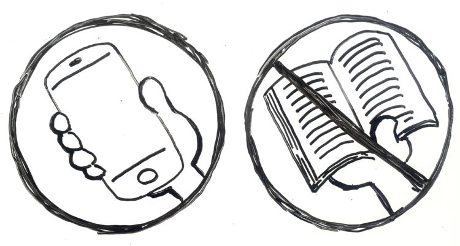

I think it's interesting, but also scary how McLuhan was able to predict
the rise of the global village. He also talks about the impact of
television on politics and advertising, which I thought was relevant to
today's society. Over the past couple of decades, technology has become
more univeral in terms of being the source of information. Previous
mediums such as radio and newspapers have become obsolete.
digitization

With the modern era focused on the delivering news and information as
fast as possible, the validity of the info must be questioned.
Fake news is everywhere. Everyone wants clicks and traffic to their
website. How unfortunate money, fame, and greed can be.